Soru 1Cevap: D
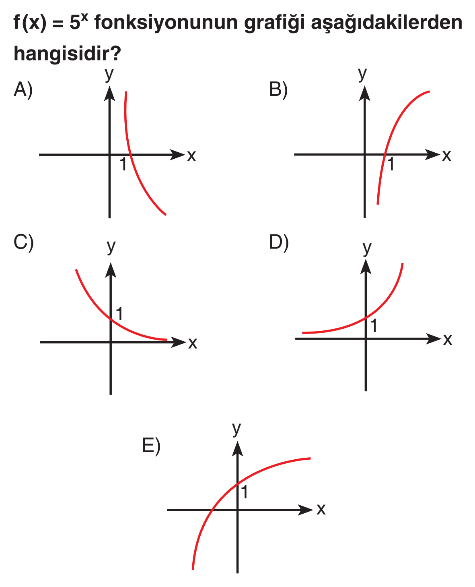
Çözüm
- $5\gt1$ olduğundan $f(x)=5^x$ artandır.
- $f(0)=5^0=1$: grafik $y$ eksenini $(0,1)$'de keser.
- Görüntü kümesi $\mathbb R^+$: grafik $x$ ekseninin üstünde kalır. Uygun grafik D.
Cevap: D
Soru 2Cevap: B
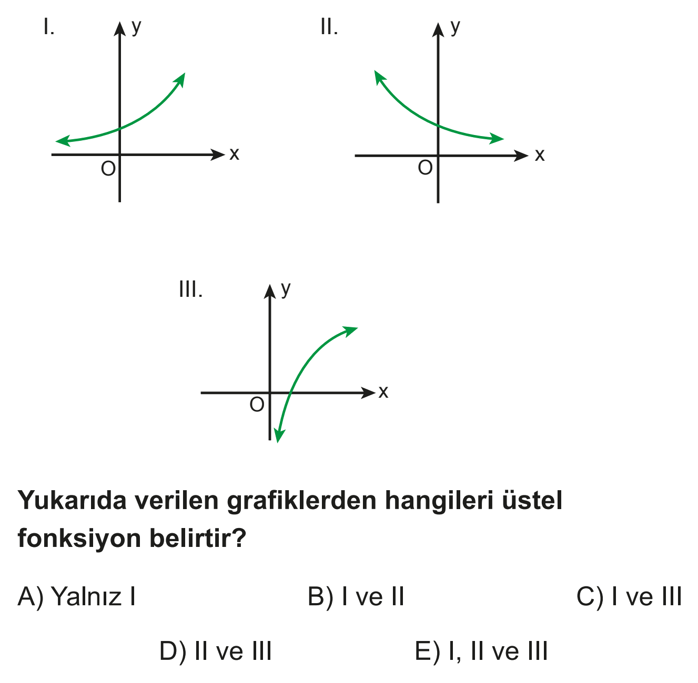
Çözüm
- I: artan, $x$ eksenine yaklaşan eğri: üstel ($a\gt1$).
- II: azalan, $x$ eksenine yaklaşan: üstel ($0\lt a\lt1$).
- III: $y$ eksenine yaklaşan eğri logaritmiktir. I ve II (B).
Cevap: B
Soru 3Cevap: B
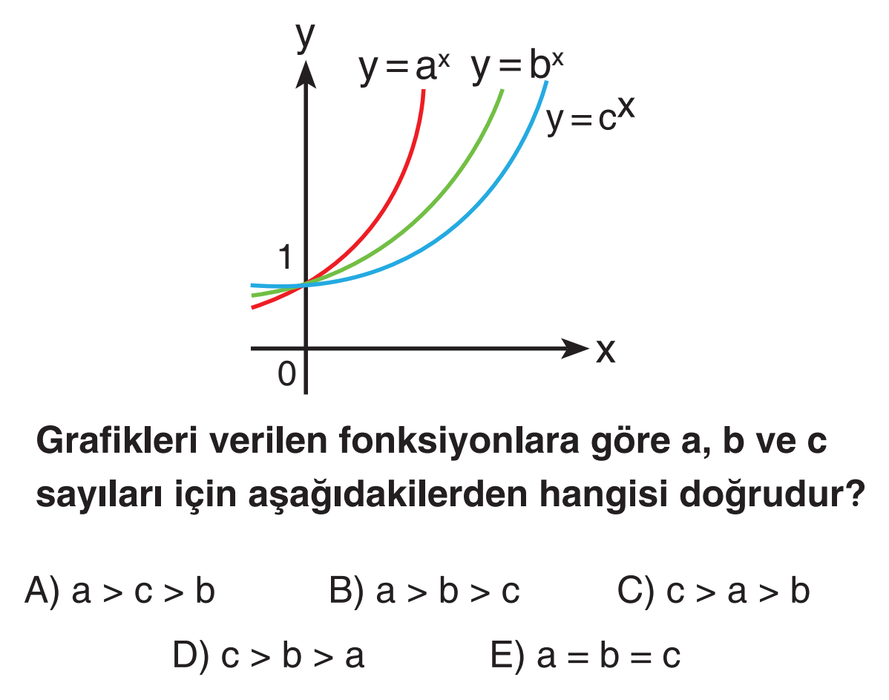
Çözüm
- Üç grafik de $(0,1)$'den geçer ve artandır: $a,b,c\gt1$.
- $x\gt0$ için taban büyüdükçe $a^x$ daha hızlı büyür, grafik daha diktir.
- En dik $y=a^x$, sonra $y=b^x$, en yatık $y=c^x$: $a\gt b\gt c$ (B).
Cevap: B
Soru 4Cevap: D
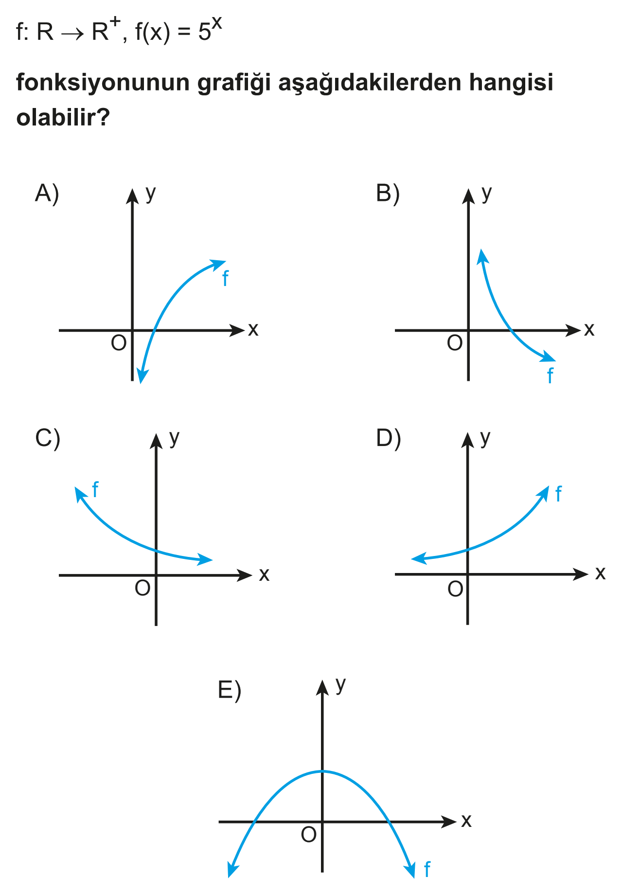
Çözüm
- $5^x$: taban $\gt1$, artan.
- $(0,1)$'den geçer, değerler pozitif.
- Grafik D.
Cevap: D
Soru 5Cevap: C
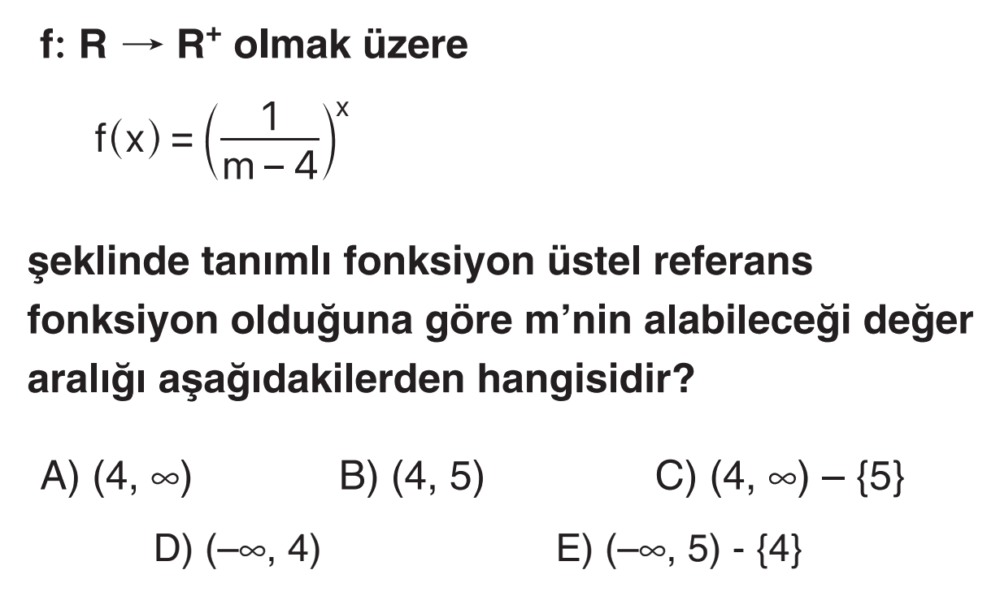
Çözüm
- Taban $\dfrac1{m-4}\gt0\Rightarrow m\gt4$.
- Taban $1$ olamaz: $\dfrac1{m-4}\ne1\Rightarrow m\ne5$.
- $m\in(4,\infty)-\{5\}$ (C).
Cevap: C
Soru 6Cevap: A
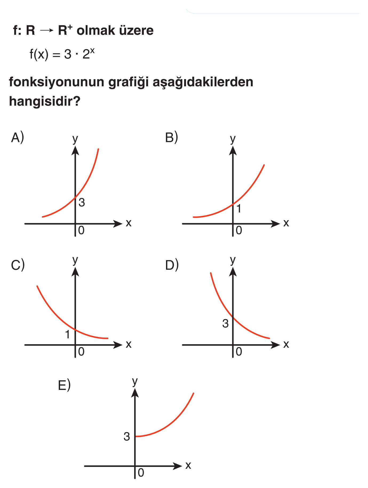
Çözüm
- $3\cdot2^x$: $2^x$ grafiğinin $y$ değerleri $3$ katına çıkar, artanlık korunur.
- $f(0)=3\cdot1=3$: $y$ eksenini $3$'te keser.
- Tanım kümesi $\mathbb R$, görüntü $(0,\infty)$: grafik A.
Cevap: A
Soru 7Cevap: E
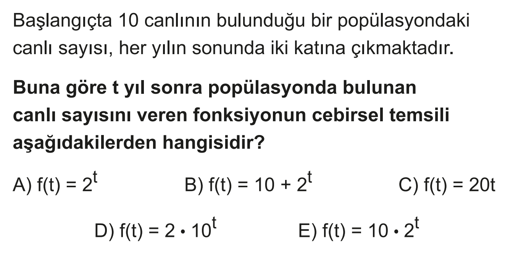
Çözüm
- Başlangıç $f(0)=10$.
- Her yıl $2$ katı: $f(1)=20$, $f(2)=40$, …
- $f(t)=10\cdot2^t$ (E).
Cevap: E
Soru 8Cevap: B
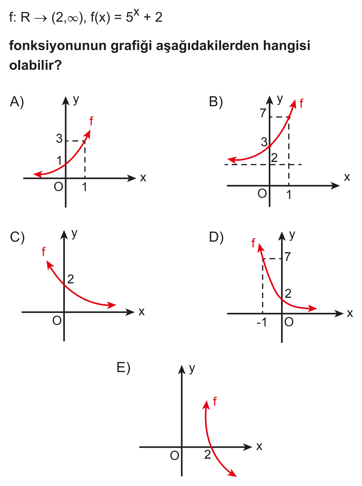
Çözüm
- Yatay asimptot $y=2$.
- $f(0)=1+2=3$, $f(1)=5+2=7$.
- $(0,3)$ ve $(1,7)$'den geçen, $y=2$'ye yaklaşan grafik B.
Cevap: B
Soru 9Cevap: C
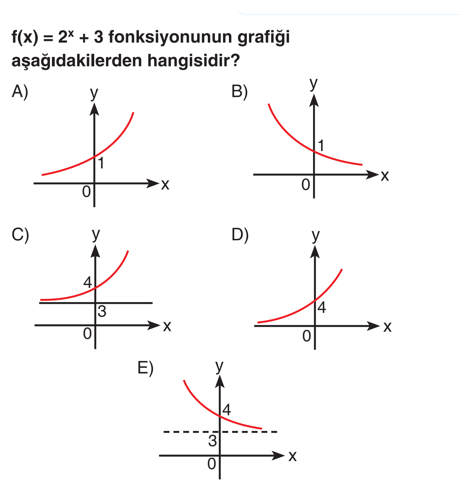
Çözüm
- $2^x+3$: $2^x$ grafiği $3$ birim yukarı ötelenir; asimptot $y=3$.
- $f(0)=1+3=4$.
- Artan, $y$ eksenini $4$'te kesen, $y=3$'e yaklaşan grafik (C).
Cevap: C
Soru 10Cevap: C
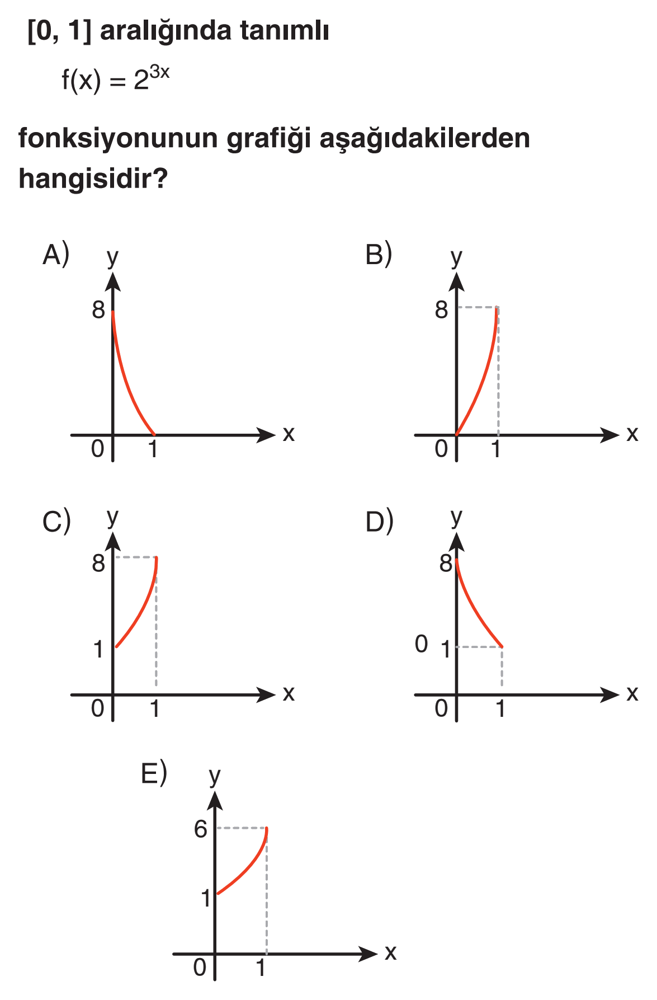
Çözüm
- $2^{3x}=8^x$ artandır.
- $f(0)=1$, $f(1)=8$.
- Grafik $(0,1)$'den $(1,8)$'e yükselen eğridir (C).
Cevap: C
Soru 11Cevap: C
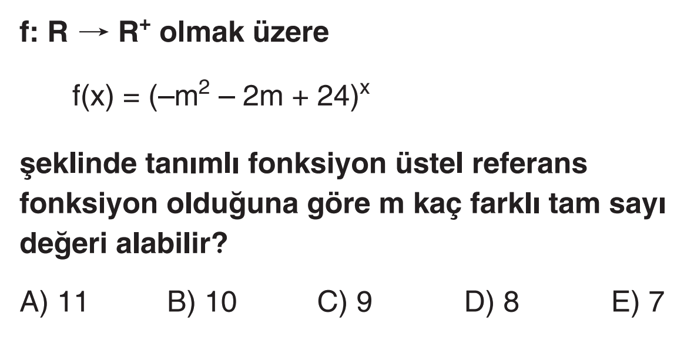
Çözüm
- $-m^2-2m+24\gt0\Rightarrow m^2+2m-24\lt0\Rightarrow(m+6)(m-4)\lt0$.
- $-6\lt m\lt4$: tam sayılar $-5,-4,\dots,3$ yani $9$ tane.
- Taban $1$ olsun: $m^2+2m-23=0$'ın tam sayı kökü yok. Cevap $9$ (C).
Cevap: C
Soru 12Cevap: D
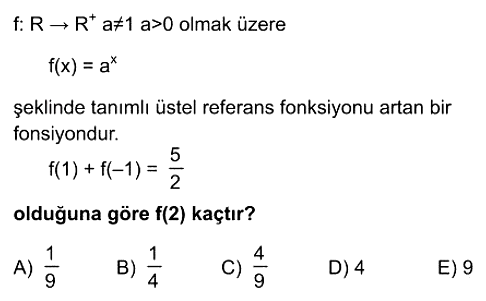
Çözüm
- $a+\dfrac1a=\dfrac52\Rightarrow2a^2-5a+2=0$.
- $a=2$ veya $a=\tfrac12$; artan olduğundan $a=2$.
- $f(2)=4$ (D).
Cevap: D
Soru 13Cevap: B
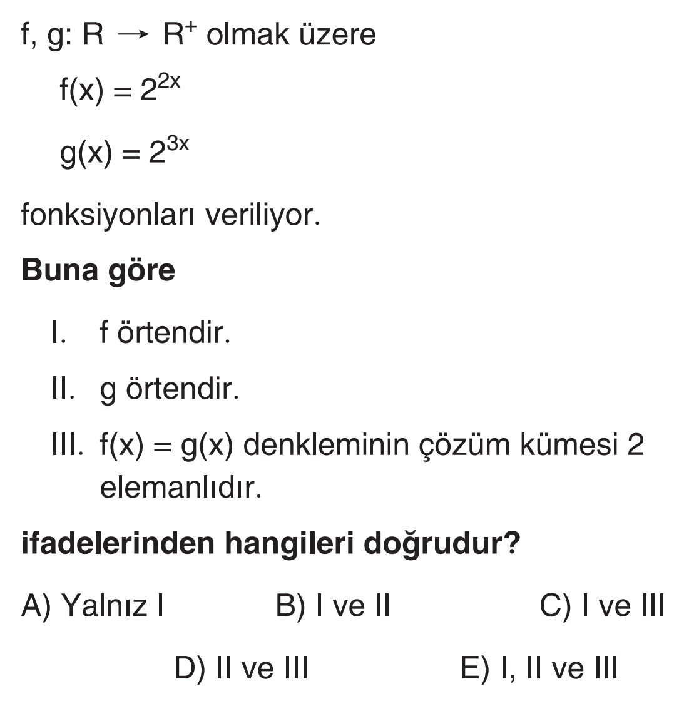
Çözüm
- $2^{2x}$ ve $2^{3x}$ fonksiyonlarının görüntü kümesi $\mathbb R^+$: ikisi de örten (I, II doğru).
- $2^{2x}=2^{3x}\Rightarrow2x=3x\Rightarrow x=0$.
- Çözüm kümesi tek elemanlı, III yanlış. I ve II (B).
Cevap: B
Soru 14Cevap: B
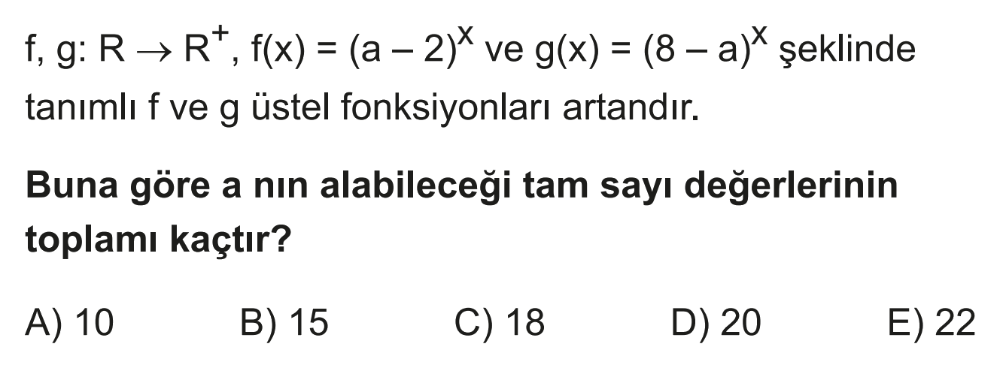
Çözüm
- $f$ artan: $a-2\gt1\Rightarrow a\gt3$.
- $g$ artan: $8-a\gt1\Rightarrow a\lt7$.
- $a=4,5,6$; toplam $15$ (B).
Cevap: B
Soru 15Cevap: D
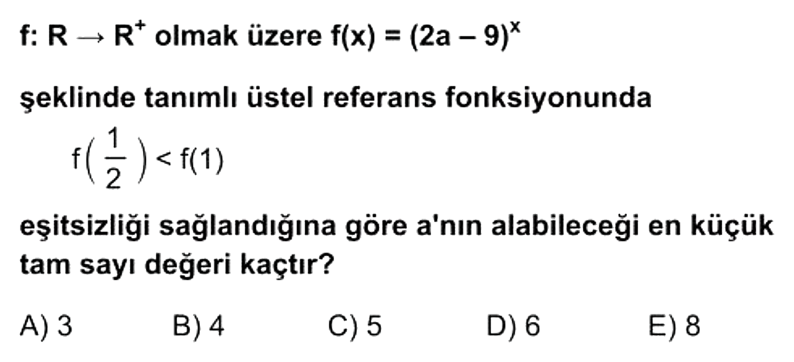
Çözüm
- $\tfrac12\lt1$ ve $f\left(\tfrac12\right)\lt f(1)$: $f$ artan.
- $2a-9\gt1\Rightarrow a\gt5$.
- En küçük tam sayı $6$ (D).
Cevap: D
Soru 16Cevap: B
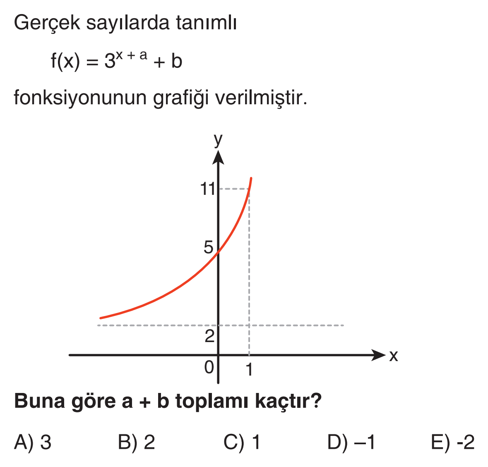
Çözüm
- $x\to-\infty$ iken $3^{x+a}\to0$: yatay asimptot $y=b=2$.
- $f(1)=3^{1+a}+2=5\Rightarrow3^{1+a}=3\Rightarrow a=0$.
- $a+b=2$ (B).
Cevap: B
Soru 17Cevap: E
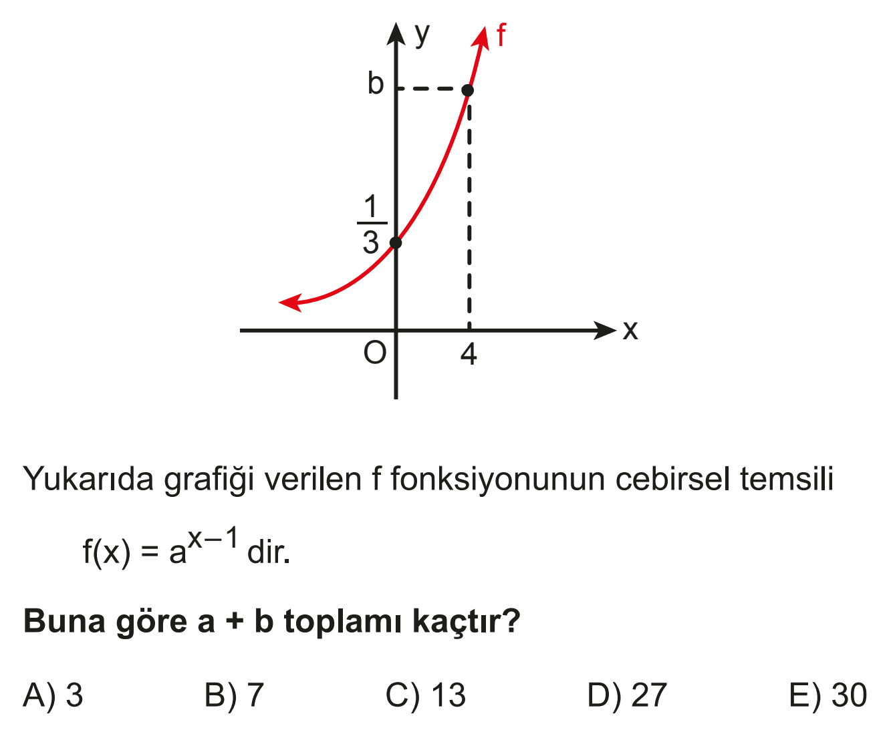
Çözüm
- $f(0)=a^{-1}=\tfrac13\Rightarrow a=3$.
- $b=f(4)=3^3=27$.
- $a+b=30$ (E).
Cevap: E
Soru 18Cevap: D
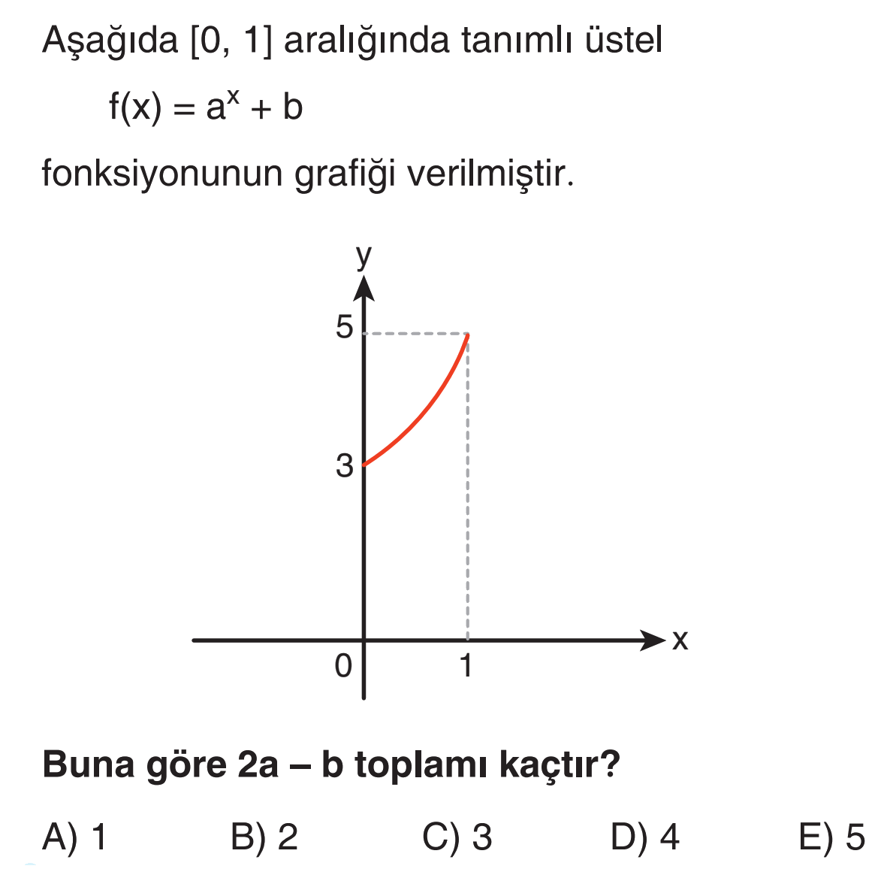
Çözüm
- $f(0)=a^0+b=1+b=3\Rightarrow b=2$.
- $f(1)=a+2=5\Rightarrow a=3$.
- $2a-b=6-2=4$ (D).
Cevap: D
Soru 19Cevap: D
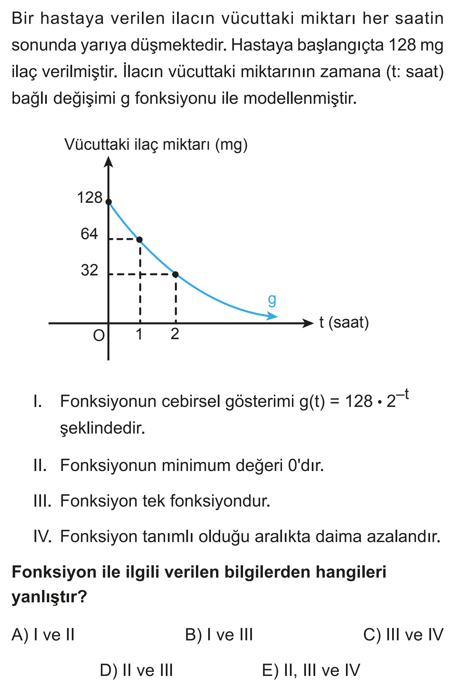
Çözüm
- $g(0)=128$, her saat yarıya: $g(t)=128\cdot2^{-t}$ (I doğru).
- $g(t)\gt0$ ama $0$'a ulaşmaz: minimum yok (II yanlış); tanım $t\ge0$, tek değil (III yanlış).
- Daima azalan (IV doğru). Yanlış olanlar II ve III (D).
Cevap: D
Soru 20Cevap: C
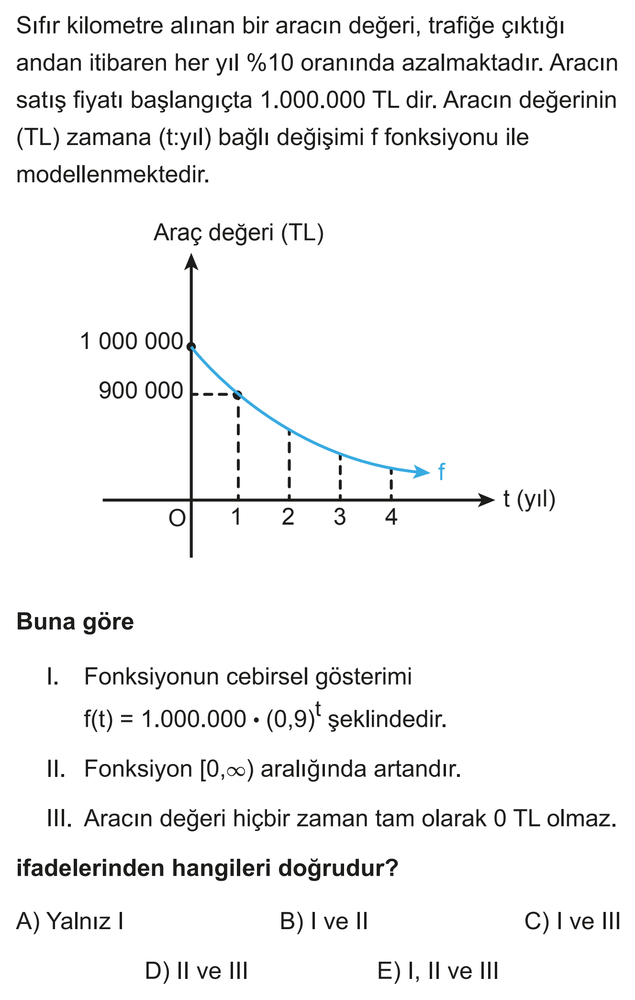
Çözüm
- Her yıl $\%10$ azalma: değer $0{,}9$ ile çarpılır, $f(t)=1000000\cdot(0{,}9)^t$ (I doğru).
- Taban $0{,}9\lt1$: azalan (II yanlış).
- $(0{,}9)^t\gt0$: değer hiçbir zaman $0$ olmaz (III doğru). I ve III (C).
Cevap: C